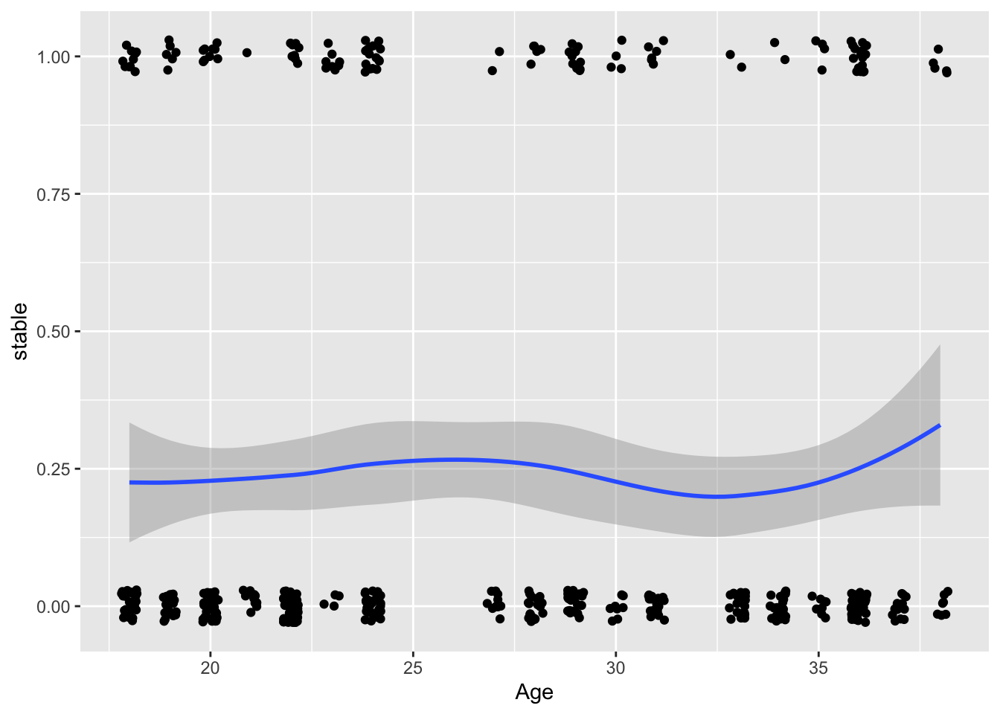
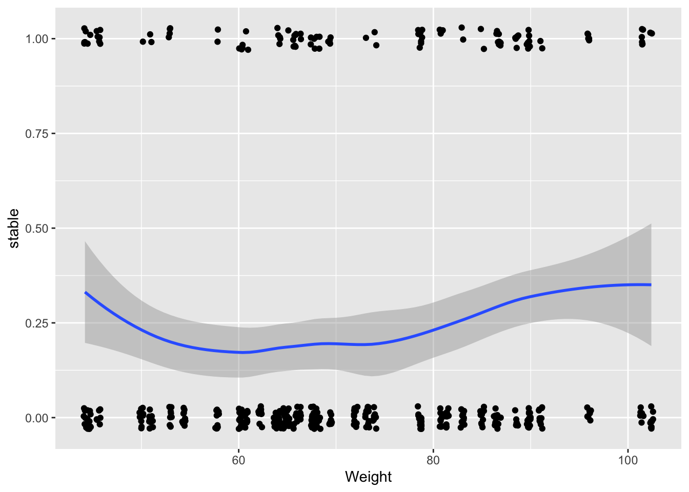
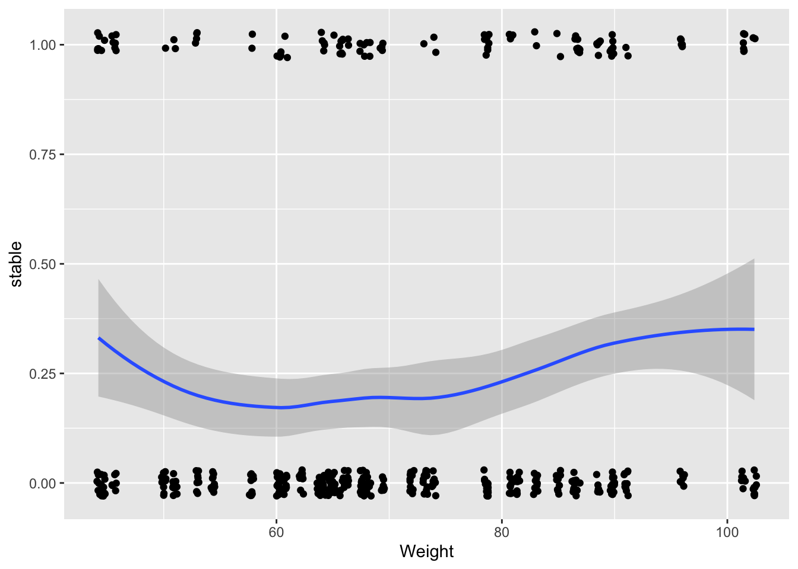

1.6 Generalised linear mixed models
A GLMM aims to combine the structures of a GLM and a mixed model. The idea os that the linear predictor of a GLM is extended to include random effecs. This sounds easy but the presence of the link function makes it computationally rather challenging.
The ctsib in the faraway package provides data on the ability of subjects to maintain stability under different surface and vision conditions. We will follow Faraway (2016) by creating a variable which simply indicates whether the subject was stable (1) or not (0).
## 'data.frame': 480 obs. of 9 variables:
## $ Subject: int 1 1 1 1 1 1 1 1 1 1 ...
## $ Sex : Factor w/ 2 levels "female","male": 2 2 2 2 2 2 2 2 2 2 ...
## $ Age : int 22 22 22 22 22 22 22 22 22 22 ...
## $ Height : num 176 176 176 176 176 176 176 176 176 176 ...
## $ Weight : num 68.2 68.2 68.2 68.2 68.2 68.2 68.2 68.2 68.2 68.2 ...
## $ Surface: Factor w/ 2 levels "foam","norm": 2 2 2 2 2 2 1 1 1 1 ...
## $ Vision : Factor w/ 3 levels "closed","dome",..: 3 3 1 1 2 2 3 3 1 1 ...
## $ CTSIB : int 1 1 2 2 1 2 2 2 2 2 ...
## $ stable : num 1 1 0 0 1 0 0 0 0 0 ...For explanatory variables which are factors we can simply calculate the proportions of cases which are stable at each level.
with(ctsib, proportions(table(stable, Vision), margin = 2))
with(ctsib, proportions(table(stable, Surface), margin = 2))
with(ctsib, proportions(table(stable, Sex), margin = 2))## Vision
## stable closed dome open
## 0 0.89375 0.86250 0.53125
## 1 0.10625 0.13750 0.46875
## Surface
## stable foam norm
## 0 0.95833333 0.56666667
## 1 0.04166667 0.43333333
## Sex
## stable female male
## 0 0.8041667 0.7208333
## 1 0.1958333 0.2791667For explanatory variables which are continuous, it helps to use geom_jitter to add some random noise as a visial device to counteract overplotting of points. A smooth trend line can also help to highlight any underlying patterns. There don’t seem to strong effects of the covariates.
ggplot(ctsib, aes(Age, stable)) +
geom_jitter(width = 0.2, height = 0.03) + geom_smooth()
ggplot(ctsib, aes(Height, stable)) +
geom_jitter(width = 0.2, height = 0.03) + geom_smooth()
ggplot(ctsib, aes(Weight, stable)) +
geom_jitter(width = 0.2, height = 0.03) + geom_smooth() 

The glmer function in the lme4 package allows us to fit a model which includes random effects. The information on the model coefficients suggests that there are indeed effects of Surface and Vision but that there is little evidence that the other variables are linked to the patterns of stability.
library(lme4)
model <- glmer(stable ~ Surface + Vision + Sex + Age + Height + Weight + (1 | Subject),
family = binomial, nAGQ = 25, data = ctsib)
summary(model)$coefficients## Estimate Std. Error z value Pr(>|z|)
## (Intercept) 16.168968694 12.70816472 1.27232917 2.032562e-01
## Surfacenorm 7.285353789 1.05508807 6.90497223 5.021325e-12
## Visiondome 0.675906070 0.52736178 1.28167435 1.999569e-01
## Visionopen 6.088819892 0.97233598 6.26205345 3.799407e-10
## Sexmale 3.096710202 1.69559373 1.82632794 6.780088e-02
## Age -0.006669382 0.07645338 -0.08723463 9.304850e-01
## Height -0.192248263 0.08886480 -2.16337927 3.051202e-02
## Weight 0.075155868 0.05909271 1.27182970 2.034336e-01We can confirm that there is little additional explanatory power in these variables by fitting a simpler model which omits them and carryong ourt a model comparison.
model_sv <- glmer(stable ~ Surface + Vision + (1 | Subject),
family = binomial, nAGQ = 25, data = ctsib)
anova(model, model_sv)## Data: ctsib
## Models:
## model_sv: stable ~ Surface + Vision + (1 | Subject)
## model: stable ~ Surface + Vision + Sex + Age + Height + Weight + (1 | Subject)
## npar AIC BIC logLik deviance Chisq Df Pr(>Chisq)
## model_sv 5 247.30 268.17 -118.65 237.30
## model 9 247.93 285.49 -114.96 229.93 7.3725 4 0.1175